Kimitsu, Chiba: things to do, food and stays
Kimitsu · Chiba
Kimitsu
Highlighted on the Chiba map.
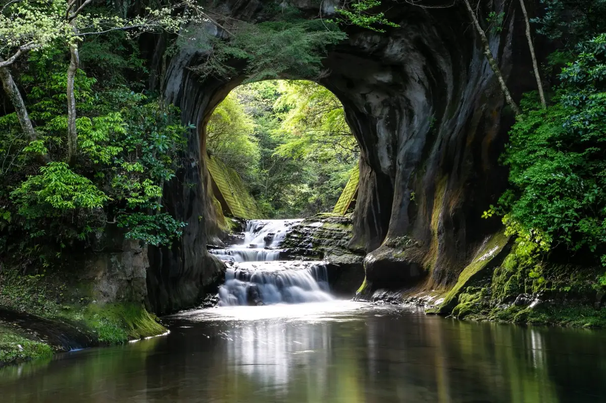
Stay
久留里山荘（QULRI SANSO）
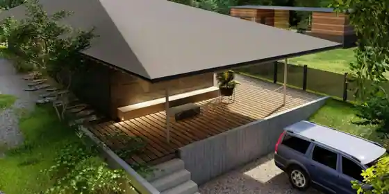
Kururi Sanso (QULRI SANSO)
Inn in Mita, Kimitsu with one group per day and a sauna.
燦美の宿 旅館かわな
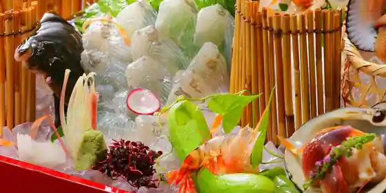
San Bi No Yado Ryokan Kawana
Ryokan inn in Hitomi, Kimitsu with open-air baths and scenic views.
グランパークホテル パネックス君津
Guran Park Hotel Panekkusu Kimitsu
Hotel in Tohanta, Kimitsu with breakfast available and parking.
シアトルハウス
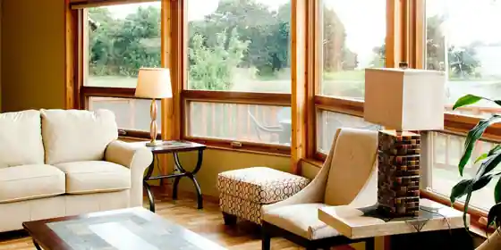
Shiatoru House
ホテルクラウンヒルズ君津（ＢＢＨホテルグループ）
Hotel Kuraunhiruzu Kimitsu (BBH Hotel Gurupu)
Hotel in Tohanta, Kimitsu with buffet meals and breakfast available.
レンブラントインかずさ
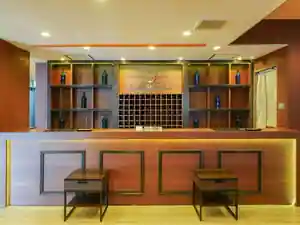
Renburantoin Kazusa
Inn in Nakano, Kimitsu with parking; 5-minute walk from Kimitsu Station.
備長炭の湯 ホテル君津ヒルズ
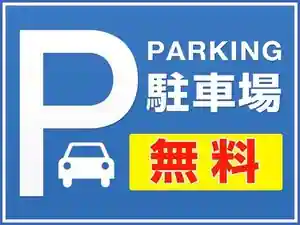
Bincho Sumi No Yu Hotel Kimitsu Hiruzu
Hotel in Hitomi, Kimitsu with buffet meals and breakfast available.
奥房総に佇む源泉掛け流しの湯宿 亀山温泉ホテル
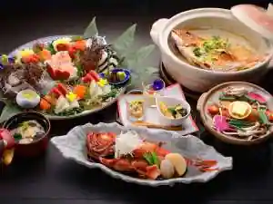
Oku Boso Ni Tatazumu Gensen Kake Nagashi No Yuyado Kameyama Onsen Hotel
Hotel at Kameyama Onsen in Toyoda, Kimitsu with free-flowing hot spring baths and family-friendly stays.
大江戸温泉物語 君津の森
Oedo Onsen Monogatari Kimitsu No Mori
Inn at Oedo Onsen in Hoki, Kimitsu.
やすらぎと光彩の宿 ペンションかめやま園
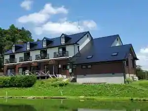
Yasuragito Kosai No Yado Pension Kameyama Sono
Pension at Mutennennokuroyu Onsen in Toyodakyusugamata, Kimitsu with lakeside location.
湖畔の宿 つばきもと
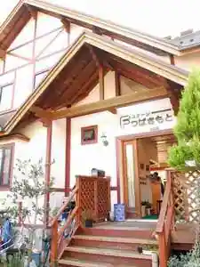
Kohan No Yado Tsubakimoto
Inn at Shizenyutakana Onsen in Kusakawahara, Kimitsu with lakeside location.
ＳＡＵＮＡ ＢＯＸ
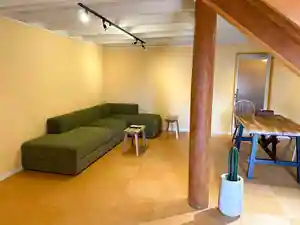
SAUNA BOX
Inn in Otoken, Kimitsu with a sauna.
Dining
村のピザ屋 カンパーニャ
Mura No Pizza Ya Kanpanya
いわし亭
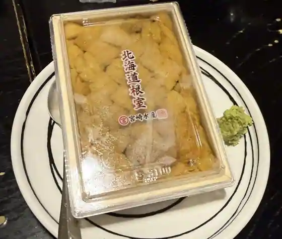
Iwashi Tei
大ちゃんラーメン
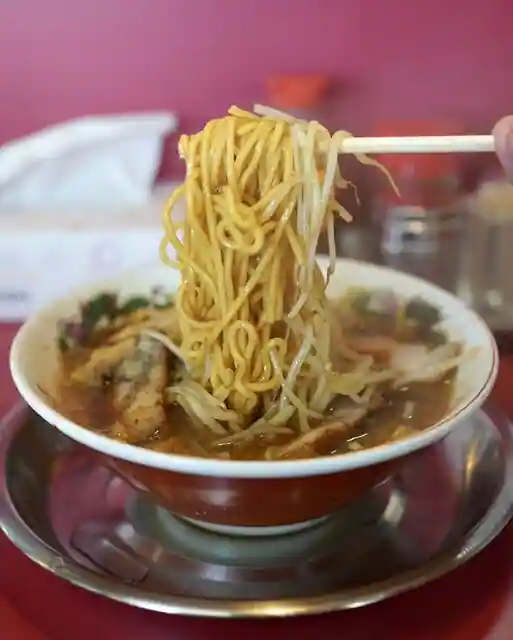
Dai Chan Ramen
SOBA ABIRU
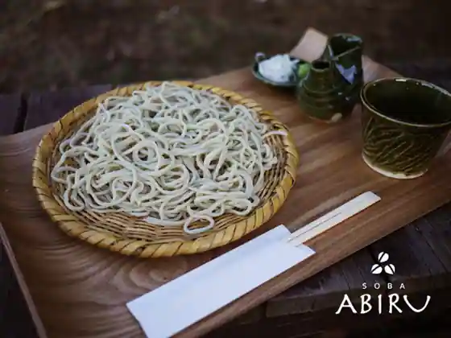
SOBA ABIRU
ラーメン 花屋
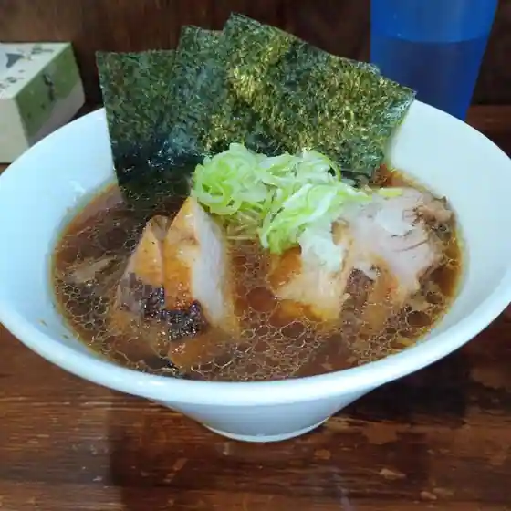
Ramen Hanaya
王道家直系 環家
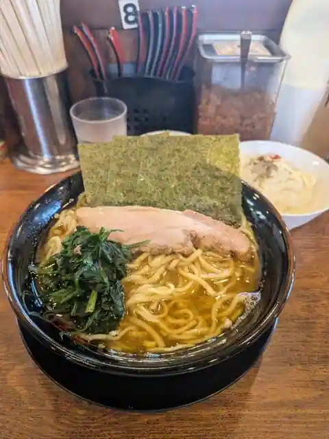
Odo Ie Chokkei Kan Ie
ピッツァ マン クルリ
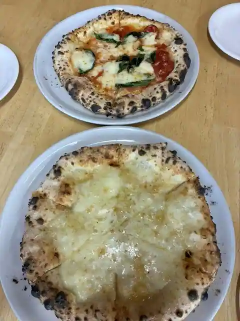
Pittsua Man Kururi
田舎レストランじんべえ
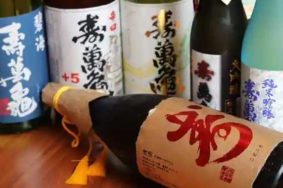
Inaka Restaurant Jinbe
菊藏
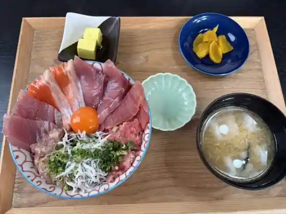
Kikuzo
風鈴堂
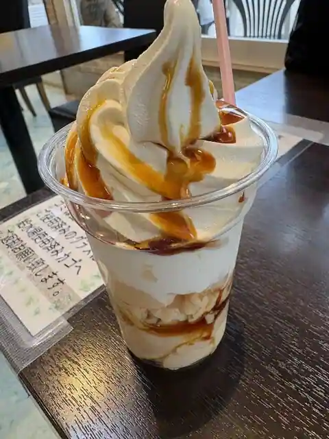
Furin Do
なかぱんカフェ 君津店
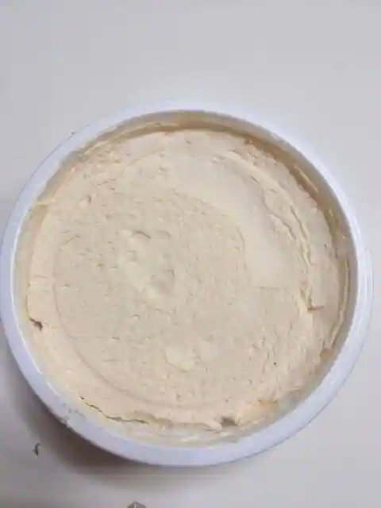
Nakapan Cafe Kimitsu
いなばのしろうさぎ
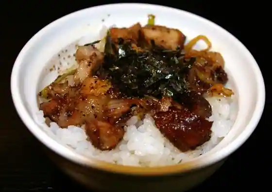
Inabanoshirosagi
喜楽飯店
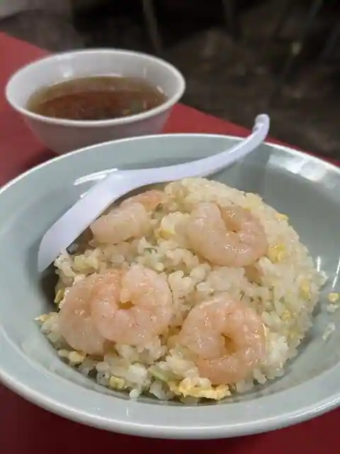
Kiraku Meshi
九拾九坊
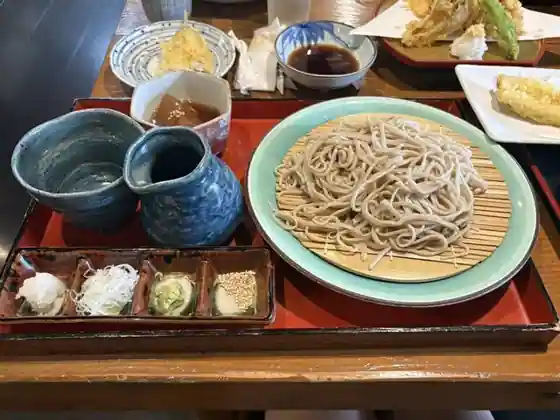
Kyu Shu Kyu Bo
激辛ラーメンの拉麺帝王
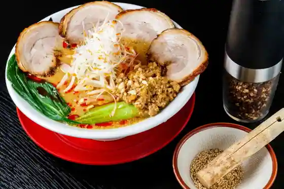
Gekikara Ramen No Ramen Teio
ジェラテリア風鈴堂
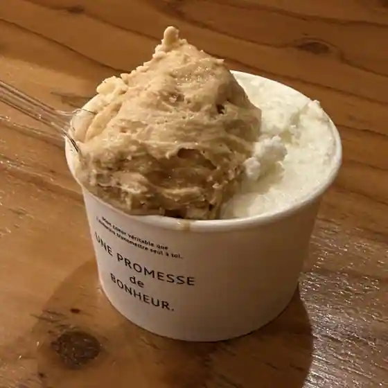
Jierateria Furin Do
ゴールド木更津カントリークラブ
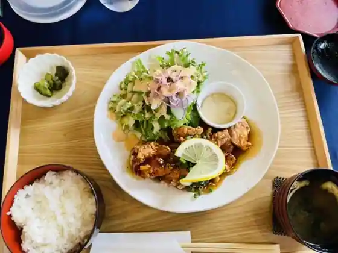
Gorudo Kisarazu Kantorikurabu
回転寿司 やまと 君津店

Kaitenzushi Yamato Kimitsu
望陀餃子楼
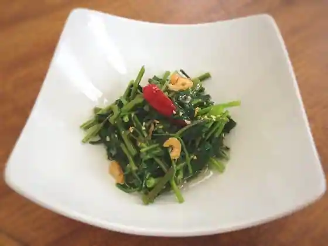
Bo Da Gyoza Ro
スープパスタ&PIZZA専門店 東京オリーブ
Supu Pasta &PIZZA Senmon Tokyo Oribu
コトノ珈琲
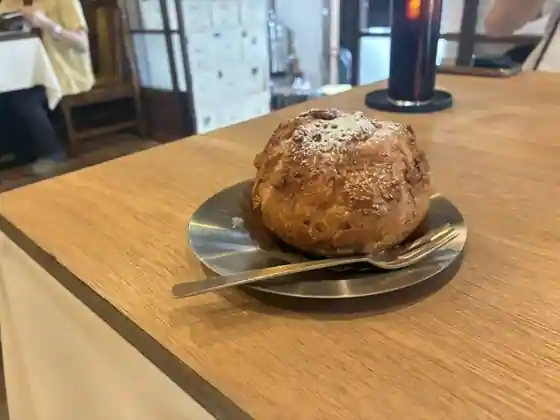
Kotono Coffee
海鮮食堂 膳
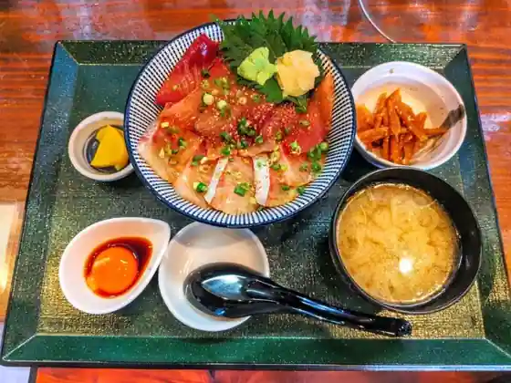
Kaisen Shokudo Zen
すえひろ飯店
Suehiro Meshi
手打ちそば処 藤美
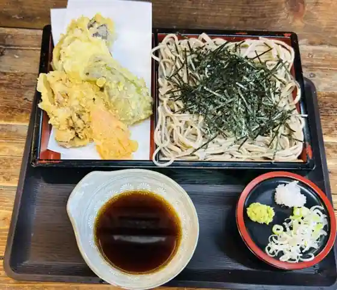
Teuchi Chisoba Tokoro Fujimi
Sights
Shimizu Keiryu Plaza (no Mizo Falls Kameiwa no Cave)
Tsukumo Tani Tembo Park
Kameyama Mizumi
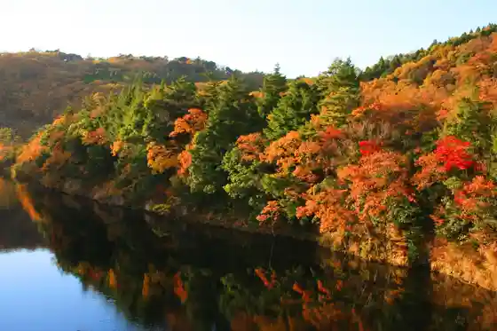
Ryoshi Kobo Doraibuin
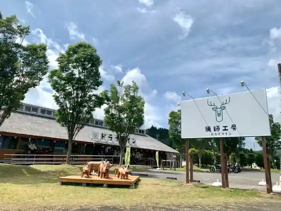
Autumn Leaves / Kameyama Mizumi
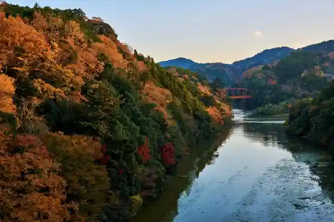
Iki Ta Mizu Kururi Sake Museum
Hachimitsuto Miido no Hachimitsu Workshop
Kano Yama Kanno Tera
Kururi Shiro (Kimitsu Ritsu Kururi Joshi Museum)
Toretore City Ba Jun no Kura Boso Shiki no Kura Jun no Kura Chokubai Tokoro
Mori to Mizumi no Resort Roman no Mori Kyowakoku
Sanshu Yama
Doripure Rozu Garden
JA Kimitsu Aji Raku I Obitsu Mise
Kazusa no Sato Ai Sai Hatake
Nosambutsu Chokubai Tokoro Sato no Megumi Kan
Mori De Asobo U Neichagemu Experience / Chiba Prefectural Kiyokazu Kenmin Forest
Noji Kumiai Hojin Nagomi Village Kimitsu
Oku Kome Ki Village Farm
JA Kimitsu Aji Raku I Sadamoto Mise
Mishima Shrine
Furutsu Village Chokubai Tokoro
Kuruberii Farm